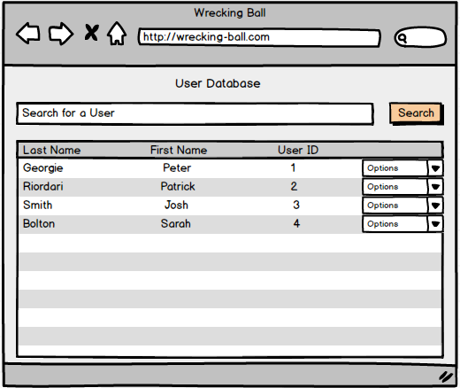
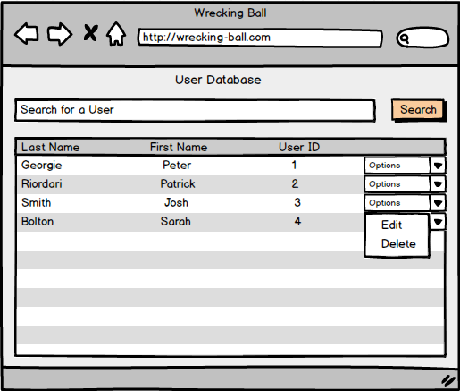
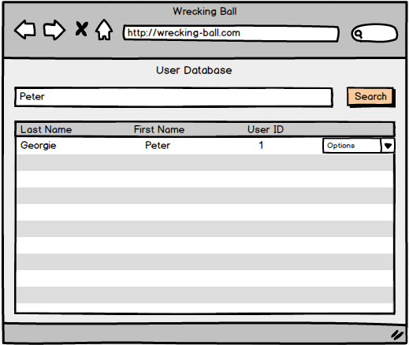

The user database is a bank of users that contains all users that are registered on the Wrecking Ball Testing Tool site. It is up to the administrators who is allowed to become a user of the testing tool. This database is essential for performing user related tasks so that every person has a permanent "account" on the site.
There are also different kinds of users: Teachers, students, graders, and administrators. These different users are all a part of the UserBank. Administrators are the sole type of user that may edit the user bank in any way, which includes adding, deleting or editing the permissions on other users. In this way,the administrators are the most important user when it comes to the users of the test tool and are necessary when making changes to users.
After logging in, the administrator clicks on the Administration option of the main screen and clicks the "User Database" option to get to the User Database as shown in Figure 1.

Figure 1: Database of users

Figure 2: The dropdown menu for user options
Another feature administrators take advantage of from the user database is searching for users. As seen in Figure 3, the administrator types in a user's name or id into the search bar and all valid results appear in the menu screen. This feature allows administrators to search for certain user and perform any administrative commands on the user without the hastle of searching for a user in a large database.

Figure 3: Searching for a user